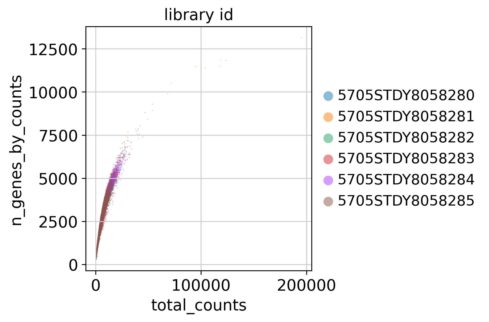
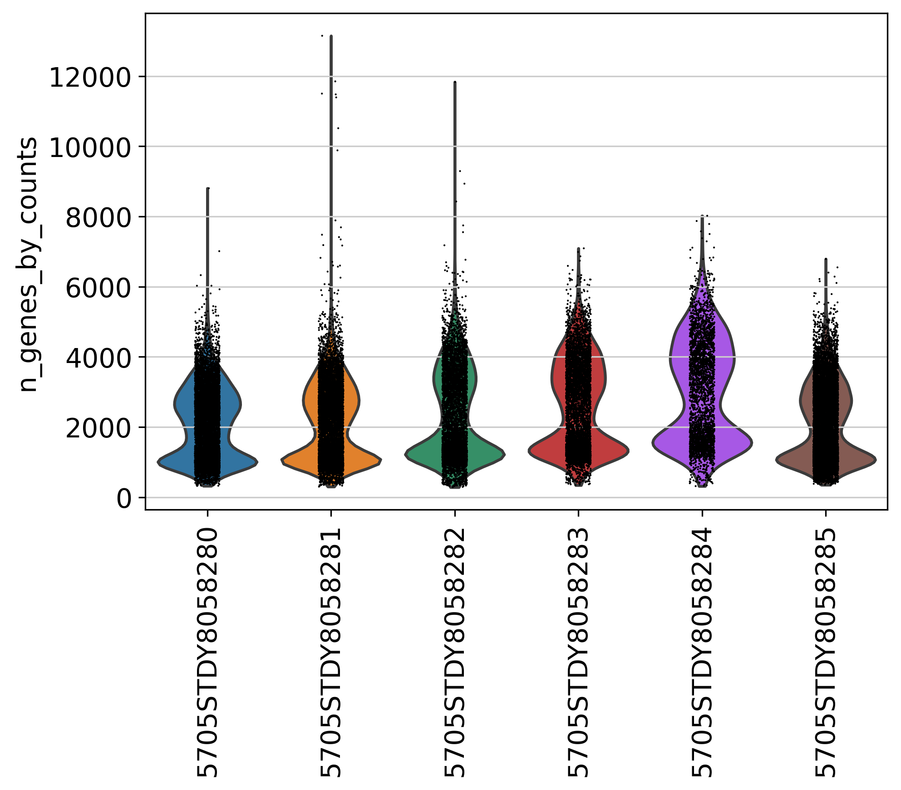
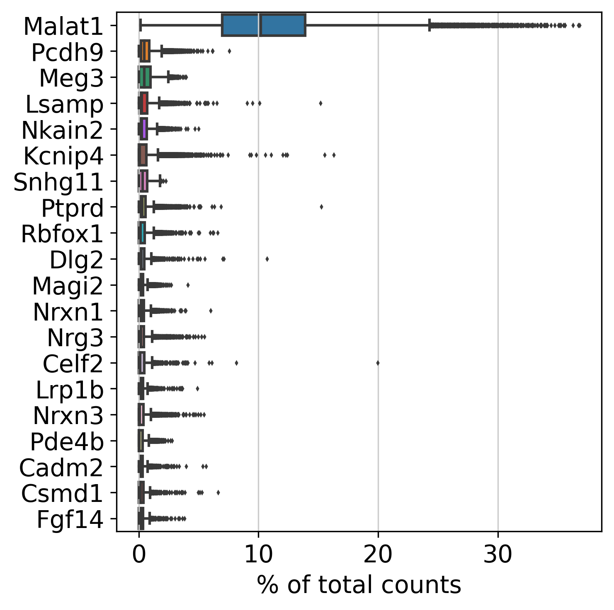
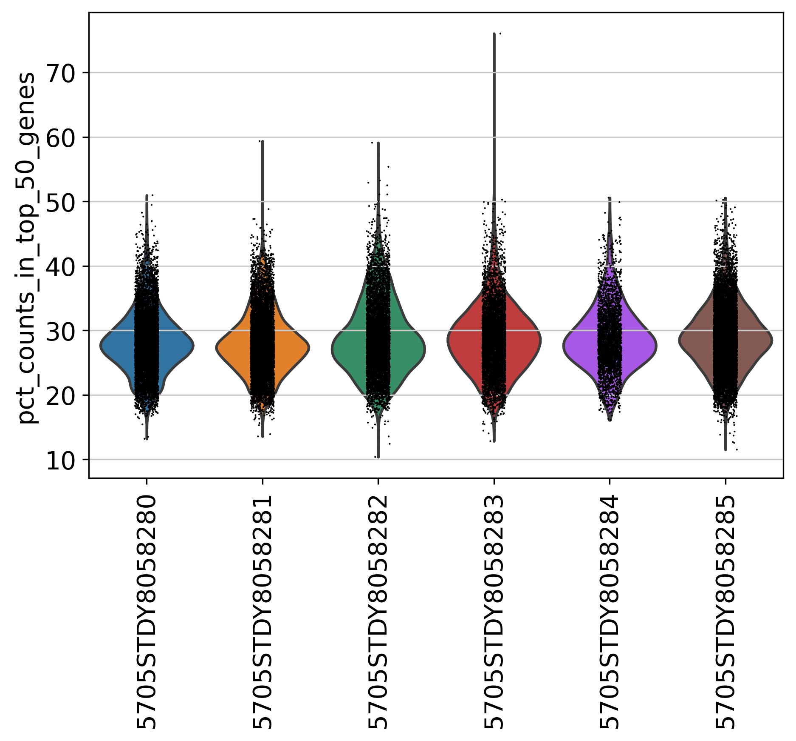
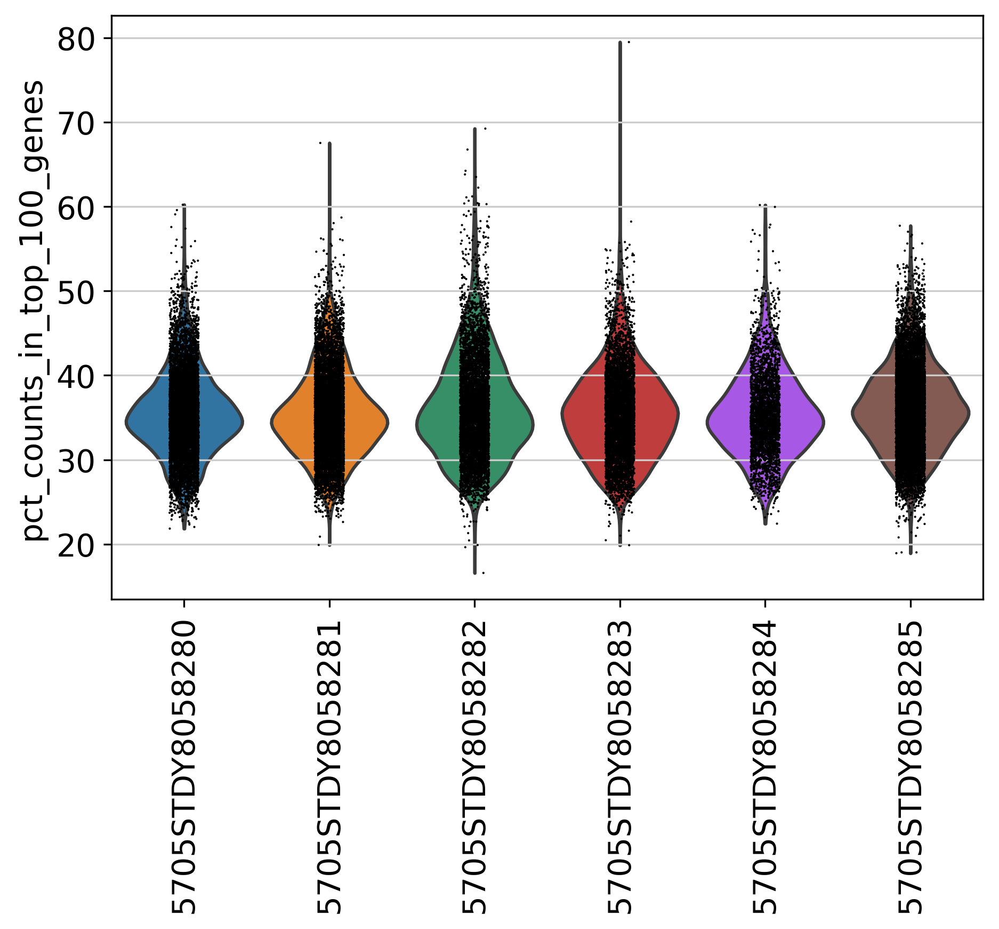
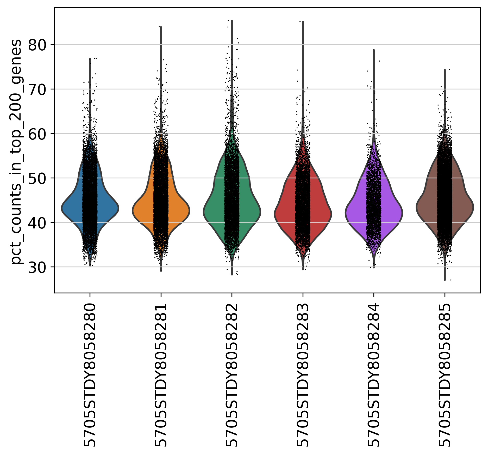

Chapter 2 Pre-filtering Plots
In this section, we present 8 figures to visualize the statistics of genes and counts across multiple datasets in the current project. In a typical single-cell data, usually several thousand genes can be detected. However, the detection of many genes (i.e. over 10,000) may indicate more than one cells were sequenced. The plots shown here can be used as a guidance to determine the cutoff. If you have turned on “filter_step: True” in the config.yml file, you will also see post-filtering plots in the next section.
2.1 Counts and Genes
This plot shows Total Counts (X axis) v.s. Genes (Y axis) detected in each sample, before filtering.

2.2 Number of Genes
This plot shows Number of Genes (Y axis) detected in each sample, before filtering.

2.3 Top Genes
This plot shows Top Genes and % of Total Counts in each sample, before filtering.
Please refer to the following link for more information about top genes: https://scanpy.readthedocs.io/en/latest/generated/scanpy.pp.calculate_qc_metrics.html.
percent_top parameter: which proportions of top genes to cover. If empty or None don’t calculate. Values are considered 1-indexed, percent_top=[50] finds cumulative proportion to the 50th most expressed gene.

2.4 Percentage of Top 50 Genes
This plot shows % of Total Counts of top 50 genes, before filtering.

2.5 Percentage of Top 100 Genes
This plot shows % of Total Counts of top 100 genes, before filtering.

2.6 Percentage of Top 200 Genes
This plot shows % of Total Counts of top 200 genes, before filtering.
